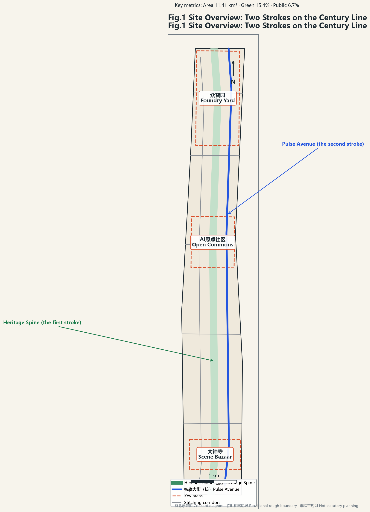
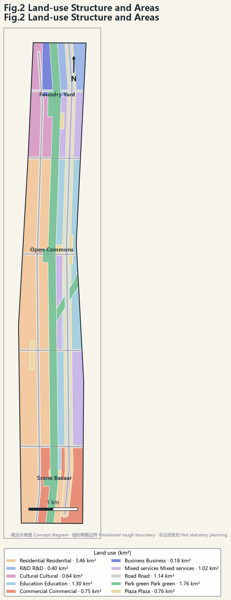
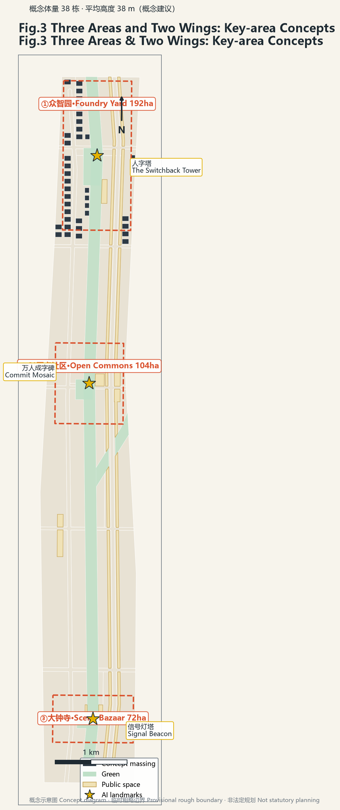
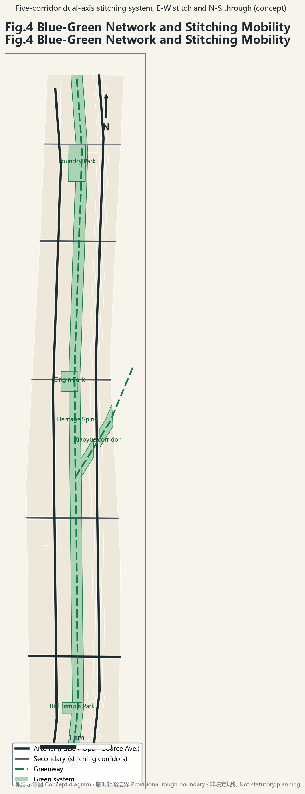
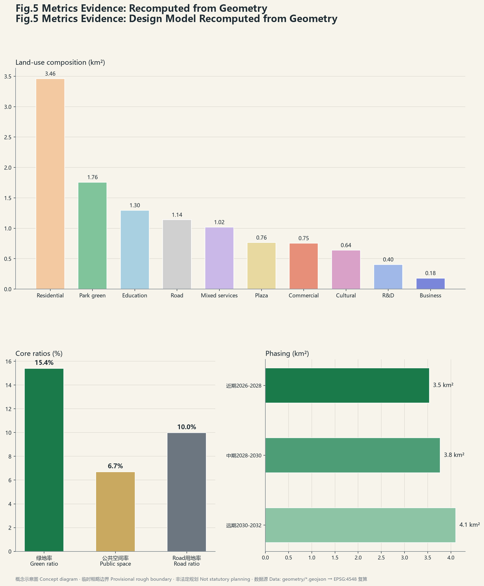

The Switchback — Two Strokes on the Century Line
A Heritage Spine (stroke one) runs parallel to a Pulse Avenue (stroke two) along the 9 km Jing-Zhang green corridor, intersecting at the AI Origin Community — two strokes, three areas and two wings, five stitching corridors — delivered as 12 AI scenario cards, 3 test beds, 6 personas and 3 AI landmarks.
The Switchback 人字京张
One stroke is the steel rail of 1909; the other is the intelligent track of 2026. Together they write the character for HUMAN on the century line.
Open co-creation concept: all spatial content is a conceptual suggestion for professional teams to deepen — not statutory planning, not a government decision. Source
Design Basis and Source Inventory
Basis: official announcement and pre-qualification (three-tier scope, three key areas, seven briefs) Source; agent taskbook agent.1–agent.6 with ten charter clauses Source; repository site-package provisional rough boundaries used strictly as provisional Source; public reporting — park Phase I opened 2023 (urban-renewal best practice), Phase II completed August 2026 as a 9 km corridor, 16.7 km² district plan approved August 2026 Source.
Three-Tier Scope Framework
Coordinated research 43.6 km² → overall design 11.41 km² Spatial data → key areas 368.4 ha. All boundaries provisional; full recalculation in EPSG:4548 once official geometry arrives Metric.


Concept, Naming and AI Ecosystem
The Switchback — three meanings: the 1909 switchback heritage symbol; the two strokes meeting at the Origin IS the structure; "human" declares human-centred AI (charter 10). Sub-brands: Zhongzhiyuan = Foundry Yard, AI Origin = Open Commons, Dazhongsi = Scene Bazaar, Zhongguancun wing = Capital Port, Xiaoyuehe wing = Life Track. Logo: a "人" written by dual tracks — rail-section left stroke, neural-network right stroke. Source
Structure: two strokes, three areas and two wings, five stitching corridors Spatial data. Loop: foundry technology → origin ecosystem → bazaar scenarios → daily life → compliant data feedback → global channels.
Eight ecosystem cases (agent.2): King's Cross, Kendall Square, one-north & AI Kampung, Kashiwa UDCK, Zhangjiang, Hangzhou West Corridor, Singapore Rail Corridor, Shanghai Suzhou Creek — each with what transfers and what must not be copied Depth. Policy anchor: Haidian 2024 AI core output 282.2 bn CNY (80% of Beijing); the plan expresses the AI Innovation Block flagship of the Zhongguancun Science City action plan.
Overall Design
Partition over 11.41 km²: residential 3.46, education/R&D 1.70, commercial 1.95, park green 1.76, plaza 0.76, road 1.14 km² Spatial data; green 15.4% Metric, public 6.7% Metric, road 10.0%. Renewal: retain-upgrade-infill without parcel-level conclusions; FAR/heights unknown pending controls Metric.
Key Areas
① Foundry Yard 192.1 ha — full-stack R&D + accelerator quadrants Spatial data; Switchback Tower landmark. ② Open Commons 104.3 ha — four mixed quadrants Spatial data; Commit Mosaic landmark: each contributor one small "人" stone, thousands forming one giant character, with an AR twin of commit records. ③ Scene Bazaar 72.0 ha — Signal Beacon landmark: railway signals as civic data lighthouse. All conceptual. Source

Personas, Scenario Cards, Test Beds (agent.3)
Six personas; twelve scenario cards S1–S12 (AR century line, agent-managed train market, underpass AI sports, commute copilot, robot delivery corridor, live contribution board, native commerce street, compute kiosks, signal-data art, elder companion line, campus edge labs, AI-governance transparency pod), each mapped to space/operator/privacy boundary and upgraded to pattern cards (problem–solution–nesting). Three test beds: robot delivery corridor, autonomous shuttle segment, city AI training sandbox in the Jing-Zhang CIM. Human review and data minimisation throughout. Source
Massing, Mobility, Blue-Green
Concept massing: 38 blocks, mean 38 m, footprint 0.213 M m², floor area ≈8.12 M m² — low-confidence design-model values Metric. Mobility: five stitching corridors + two avenues, 36.3 km Metric. Blue-green: spine + eco-corridor + three parks = 15.4% Spatial data; public 6.7% Metric. Component library: 1 heritage + 1 intelligent + 1 activity per node.

Culture (agent.5) and Operations (agent.6)
Four acts: 1909 origin → 2019 land returned → 2023–2026 corridor → 2026 the second stroke. Signage: railway language × code language. Annual Human Byte Festival (August) with Agent City-Task Race; spring forum, autumn open-source week, winter scenario day. Community "Between Strokes"; standing Urban Design Center (UDCK model); pathway participant→member→author→incubation→foundry→global. All events conceptual, not confirmed arrangements. Source
Phasing and Metrics
P1 2026-28 (3.54 km²) / P2 2028-30 (3.77 km²) / P3 2030-32 (4.11 km²) Spatial data. Core metrics recomputed: site 11,412,825 m², green 15.4%, public 6.7% — consistent with visual data-values Metric.

Risk, Copyright, Channel
Public/cleared sources only; self-generated figures labelled concept/provisional; original logo direction. Final judgement rests with humans (charter 7). Channel: Agent open-call PR channel, conferring no professional pre-qualification; internal deadline discipline PR by 8/29. Pending official geometry/controls; area metrics recalculated on arrival. See report/copyright_statement.md.
References
Official announcement (2026); repository taskbook and site-package; Beijing media on the heritage park (2023/2026); High Line; King's Cross; Kendall; Tsinghua FIB Lab DRL-urban-planning (MIT) & AgentSociety (Apache-2.0); Hangzhou corridor ordinance; Kashiwa UDCK; URA Rail Corridor; Suzhou Creek — machine index in sources.json. Source